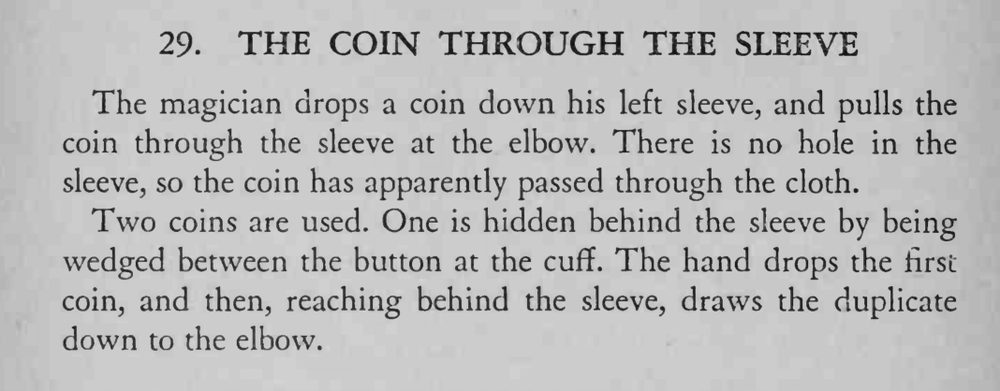

硬币从左袖口丢进袖子，魔术师却从手肘处把它拉了出来——袖子完好，没有任何破洞。
两枚硬币必须一模一样；取币时手要自然地从袖后绕出，别让观众瞥见袖里的硬币。

The magician drops a coin down his left sleeve, and pulls the coin through the sleeve at the elbow. There is no hole in the sleeve, so the coin has apparently passed through the cloth. Two coins are used. One is hidden behind the sleeve by being wedged between the button at the cuff. The hand drops the first coin, and then, reaching behind the sleeve, draws the duplicate down to the elbow.